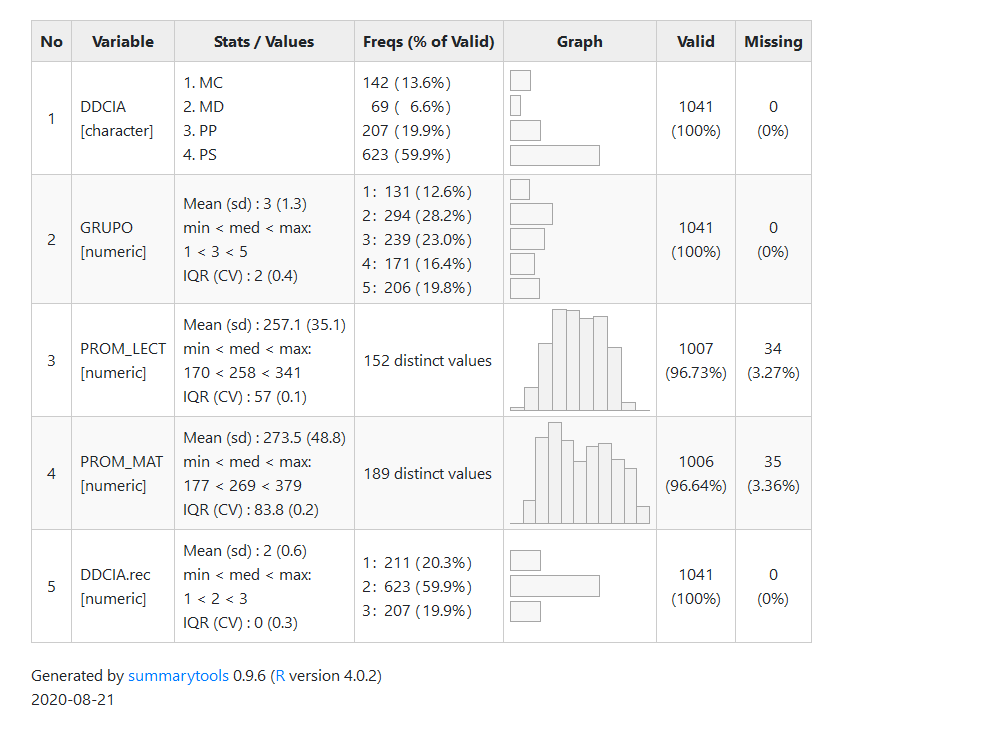

El presente estudio tratará el problema de la incidencia de los factores socioeconómicos del establecimiento sobre los resultados promedio de la prueba SIMCE 2013 de segundos medios de la Región Metropolitana, cuyo análisis girará en torno a la pregunta ¿En qué medida varían los resultados de los puntajes SIMCE de matemáticas y lenguaje de estudiantes de 2° medio, respecto a la variación del nivel socioeconómico y la dependencia administrativa del establecimiento? Para ello se utilizará la base de datos SIMCE del año 2013, que contempla una muestra de 1045 colegios, y se le aplicarán técnicas de alcance estadístico correlacional y multivariado, donde por medio de correlaciones simples y múltiples se concluye la existencia de una fuerte incidencia del nivel socioeconómico de la institución en los resultados SIMCE, sin ser estadísticamente significativa la dependencia administrativa de esta.
La desigualdad socioeconómica es una problemática latente en Chile, que lejos de acabarse, continúa permeando todas las esferas de la vida social, afectando en la distribución barrial, la inserción laboral y el acceso a un buen servicio de salud y educación, entre otros. La presente investigación se erige sobre este último ámbito -la educación-, pues “uno de los espacios sociales en donde se evidencia con mayor fuerza la diferenciación social y el desigual ejercicio de derechos es en la educación primaria y secundaria” (Madero, 2011, p. 2), por lo que el enfoque de esta, radicará en las influencias que ejerce la desigual distribución de recursos escolares sobre los resultados de la prueba SIMCE, ya que “la mayor parte de los estudios referidos a este tema, evidencian resultados estructurados en función de la clase social” (Madero, 2011, p. 1) Por otro lado, no deja de ser importante tener en cuenta que la desigualdad en temas educativos en Chile cobra especial relevancia, “ya que es imposible pensar un ejercicio informado de la ciudadanía y un control popular de la tecnocracia sin que ese pueblo tenga niveles considerables de educación” (García-Huidobro & Belleï, 2003, p. 2), además se debe considerar que “esta meta se hace todavía más trascendente en un contexto donde se ha impuesto la utilización del mercado, como el instrumento de asignación de bienes tan determinantes en la calidad de vida de las personas como el salario, las prestaciones de salud, de previsión social entre otras”. (García-Huidobro & Belleï, 2003, p. 2).
De acuerdo a ello, cabe preguntarse ¿En qué medida varían los resultados de los puntajes SIMCE de matemáticas y lenguaje de estudiantes de 2° medio, respecto a la variación del nivel socioeconómico y la dependencia administrativa del establecimiento? Frente a lo cual surge el argumento central de este estudio o hipótesis alternativa, el que afirma que los resultados de los puntajes SIMCE de matemáticas y lenguaje aumentan en cuanto el nivel socioeconómico es mayor y la dependencia administrativa se encuentra más desligada del Estado.
En este sentido, el argumento principal tiene su enfoque en la variable dependiente que son los resultados promedios de la prueba SIMCE de matemática y lenguaje de los segundos medios de la Región Metropolitana del año 2013. Esta corresponde al actual Sistema de medición de la calidad de la educación, cuya primera evaluación se realizó en 1988 a nivel nacional (Agencia de calidad de la educación, 2020). Sin embargo, ha sido una prueba estandarizada controversial desde sus inicios por diferentes motivos, dentro de los que se encuentra “la estigmatización que sufren los profesores, directores y estudiantes de los establecimientos que obtienen bajos resultados, los que coinciden en gran medida con los establecimientos más pobres” (Ortiz, 2010, p. 2), además de que se afirma que la prueba ha perdido su sentido inicial, pues “por las características del sistema de medición SIMCE, sus resultados por sí mismos nos dicen poco acerca de la calidad de los establecimientos educacionales, y nos dicen mucho sobre la inequidad de nuestra sociedad y la alta segmentación socioeconómica que se ha instalado en nuestro sistema escolar durante los últimos años” (Redondo et al., 2006, p. 7)
Por otro lado, la primera variable independiente, se toma en cuenta el grupo socioeconómico al que pertenece el establecimiento, “el que los divide en cinco grupos (bajo, medio bajo, medio, medio alto y alto), de acuerdo al ingreso, la escolaridad y el índice de vulnerabilidad promedio del establecimiento” (Agencia de calidad de la educación, 2014, p. 14), pues según variados estudios ha sido posible demostrar que corresponde a una característica contextual, que afecta el desempeño de los estudiantes y por tanto es uno de los más importantes a tomar en cuenta. Así mismo, en una tesis doctoral se afirma que “una constante en todos los países es el hecho de que el rendimiento, con mayor o menor fuerza viene influido por el nivel socioeconómico” (García, 2015).
En cuanto a la segunda variable independiente, dependencia administrativa, Drago y Paredes (2011, p. 2) afirman que “el hecho de que existan grandes y sistemáticas diferencias incondicionales en los tests estandarizados por tipo de escuelas no es suficiente para sugerir que la calidad provista es distinta”, por lo que no podría sugerirse que la dependencia administrativa sea un factor absolutamente determinante por sí solo en los resultados académicos de los establecimientos. Sin embargo, diversos estudios, han concluido -a partir de la evidencia- que, si bien la dependencia administrativa en los resultados académicos no es concluyente, si es un factor importante asociado al desempeño académico (Mizala & Torche, 2012; Torche, 2005), es por esto que para esta investigación se considerará el factor dependencia y se controlarán los resultados a través de este.
De acuerdo a lo expresado, la profundización en el análisis de estas variables aporta como instrumento para la evaluación de cómo se mide la educación chilena, y las posibles futuras proyecciones orientadas en el mejoramiento de políticas educativas, enriqueciendo el debate sobre qué tipo de educación es la que se necesita en Chile, los objetivos que debe perseguir y sobre qué instrumentos debería medirse su calidad.
Teniendo en cuenta la pregunta de investigación y la hipótesis central, se desglosa como objetivo general dar cuenta del aumento de los resultados SIMCE en lenguaje y matemáticas respecto a un mayor nivel socioeconómico y una dependencia administrativa privada; y junto a ello dos hipótesis y objetivos específicos. Primero, y con el objetivo de observar la influencia de la variable dependencia en la regresión entre el nivel socioeconómico y los puntajes SIMCE, se afirmará que al incorporar la variable dependencia del colegio a la regresión entre el nivel socioeconómico y los resultados SIMCE, se generarán diferencias significativas. El segundo, en miras de demostrar el énfasis que colegios privados les otorgan a los aprendizajes en matemáticas, se asevera que la influencia del nivel socioeconómico de los establecimientos sobre los puntajes SIMCE será mayor en la prueba matemáticas que en la de lenguaje.
Dado que el objetivo es demostrar la variación de la variable dependiente “resultados SIMCE de lenguaje y matemáticas” respecto a la variación de las variables independientes “Nivel socioeconómico del establecimiento” y “Dependencia administrativa del establecimiento”, el estudio tiene un alcance multivariado. Para ello se utilizará la base de datos SIMCE de estudiantes de segundo medio del año 2013 de la Región Metropolitana, cuya muestra es de 1045 datos y de la cual se escogen cuatro variables principales: las variables dependientes “Puntaje promedio en Comprensión de Lectura” (PROM_LECT), y “Puntaje promedio en Matemática” (PROM_MAT) y las variables independientes “Grupo socioeconómico del establecimiento”, constituida por 5 niveles: Bajo (1), Medio Bajo (2), Medio (3), Medio Alto (4) y Alto (5) y el “Tipo de dependencia del establecimiento” (DDCIA), la cual originalmente consta de cinco categorías, pero para efectos del estudio -y para reducir complejidad- será acotada a tres (DDCIA.rec): Municipal (M), Particular subvencionado (PS) y Particular pagado (PP). Cabe mencionar que ambas variables independientes serán operacionalizadas como variables categóricas, dejando como categoría de referencia, en el primer caso, al grupo socioeconómico “Bajo (1)” y, en un segundo caso, a la dependencia administrativa “Municipal (M)”.
En cuanto a una descripción univariada de las variables dependientes, se observa que el promedio de los puntajes de lenguaje son 257 puntos, con un mínimo de 170 y un máximo de 341 puntos, mientras que los promedios de los puntajes en el SIMCE de matemáticas son 274 puntos, con un mínimo de 177 y un máximo de 379, presentándose una pequeña diferencia positiva en comparación con los puntajes de lenguaje.
Sobre el grupo socioeconómico, está dividido en 5 categorías, donde la mayor cantidad de establecimientos se encuentra en el grupo “Medio Bajo” con una frecuencia absoluta de 286, seguido del grupo “Medio” con 235 colegios, encontrándose el grupo “Bajo” con la menor cantidad, con un número de 120.
Finalmente, la variable de dependencia administrativa, al ser operacionalizada en tres categorías, la mayor cantidad de establecimientos son particular subvencionado (PS) con 608 instituciones, un número significativamente mayor a los establecimientos municipales y privados, cuya frecuencia absoluta de ambos es de 199.
Para efectos del análisis de datos, se utilizan las técnicas de estadísticas multivariadas de regresión lineal simple y múltiple mediante el programa RStudio. En primer lugar, se observará la correlación entre la variable dependiente PROM_MAT y las independientes GRUPO y DDCIA.rec, por lo que se excluye de la base de datos la segunda variable dependiente PROM_LECT, la cual se puede observar en el Gráfico 1. Realizada la correlación, se procede a generar dos regresiones simples con ambas variables independientes (operacionalizadas como dummy), para posteriormente realizar una regresión múltiple entre las ya mencionadas tres variables, con el fin de demostrar la hipótesis alternativa presentada. Este mismo ejercicio estadístico se repetirá con la segunda variable dependiente, PROM_LECT, para finalmente hacer una comparación de modelos con los resultados y corroborar la hipótesis planteada que afirma una mayor influencia del nivel socioeconómico en los puntajes de matemáticas por sobre los de lenguaje.
view(dfSummary(SIMCE_1, headings=FALSE), file= "./Output/Images/descriptivos.html")## Output file written: C:\Users\maver\Documents\cienciabierta\Output\Images\descriptivos.htmlwebshot("./Output/Images/descriptivos.html", "./Output/Images/descriptivos.png")
| Modelo 1 | Modelo 2 | Modelo 3 | |
|---|---|---|---|
| Predictores | ß | ß | ß |
| (Intercept) | 214.75 *** | 237.28 *** | 214.39 *** |
| GRUPO [2] | 26.46 *** | 26.12 *** | |
| GRUPO [3] | 62.54 *** | 62.01 *** | |
| GRUPO [4] | 87.97 *** | 87.89 *** | |
| GRUPO [5] | 112.02 *** | 118.17 *** | |
| DDCIA.rec [2] | 31.56 *** | 1.02 | |
| DDCIA.rec [3] | 86.93 *** | -6.23 | |
| Observations | 1004 | 1004 | 1004 |
| R2 / R2 adjusted | 0.593 / 0.592 | 0.328 / 0.327 | 0.594 / 0.591 |
|
|||
El gráfico N°1, muestra la intensidad de las correlaciones entre las variables grupo, promedio matemática y dependencia administrativa. En cuanto a las variables grupo y promedio matemática, esta es de 0,77, lo que, en la escala de correlación de Pearson, se traduce en una correlación positiva alta, por lo que se concluye que la variable que hace alusión al grupo socioeconómico del establecimiento, guarda estrecha correlación con los promedios obtenidos en el SIMCE de matemática. En cuanto a las variables independientes grupo y dependencia administrativa, la correlación de esta es de 0,75, la cual igualmente es una correlación positiva y alta, lo que en este caso se traduce como la existencia de una colinialidad, una correlación fuerte entre variables independientes. Por último, se tiene la correlación de las variables promedio matemática y dependencia administrativa, la cual es de 0,56, siendo una correlación positiva moderada, por lo que sí existe una relación entre el puntaje promedio obtenido en el SIMCE de matemática respecto a la dependencia administrativa a la que pertenece el establecimiento.
En la tabla n°1 se visualizan los tres modelos de regresión aplicados a la variable dependiente “promedio de matemática”. En el primer modelo se aplicó la regresión simple con la variable “grupo socioeconómico”, donde el intercepto de dicha regresión, es decir, la cantidad de puntaje base que un colegio obtendría sin importar su nivel socioeconómico, es de 215 puntos aproximadamente. En cuanto a los coeficientes de regresión, se observa un aumento de los coeficientes a medida que aumenta el grupo al que se pertenece -en relación con el grupo de referencia “Bajo”-, lo que se traduce como un aumento de los puntajes obtenidos en el SIMCE mientras más alto estés ubicado socioeconómicamente. De este modo, es que un establecimiento perteneciente al nivel “Medio Bajo” obtendrá 26, 46 puntos más que un establecimiento de un nivel “Bajo”, mientras que un colegio de un nivel “Alto” obtendrá 112,02 puntos más que el de nivel “Bajo”, con un 99% de confianza en ambos casos. La segunda regresión simple, que trabaja con la variable independiente “dependencia administrativa”, es presentada en el segundo modelo. En este caso el intercepto es de 237 puntos aproximadamente, es decir, se parte de la base de 237 puntos obtenidos. Aquí, los coeficientes de regresión también presentan un aumento a medida que aumenta la desvinculación con el Estado, donde una institución particular-subvencionada obtendrá 31,56 puntos más que una institución municipal, mientras que un colegio privado obtendrá 86,96 puntos más que un colegio municipal, ambos casos con un 99% de confianza. Cabe mencionar que al analizar el r^2, se observa que este explica solo el 33% de la varianza de la variable dependiente, mientras que el modelo número uno explicaría el 59% de dicha varianza, permitiendo considerar, preliminarmente, que la pertenencia a un grupo socioeconómico tendría mayor incidencia en los puntajes SIMCE que la vinculación administrativa de los establecimientos. Finalmente, el tercer modelo representa la regresión múltiple que toma en cuenta ambas variables independientes ya trabajadas. Aquí, con respecto a la variable de “grupo socioeconómico”, no se visualizan mayores diferencias en relación con el primer modelo, salvo una tendencia a disminuir levemente los coeficientes de regresión de cada grupo (con excepción del último). Sin embargo, es al observar la variable de dependencia controlada por grupo económico donde se evidencian diferencias interesantes. Hay una disminución significativa de los coeficientes de regresión en comparación con el modelo n°2, donde en el caso de las instituciones particular-subvencionadas se pasa de 31,56 puntos a 1.02, y en el caso de los establecimientos privados se pasa de 86,93 a -6,23 puntos, donde, de todas formas, en ningún caso los coeficientes presentan valores estadísticamente significativos. De igual manera es interesante observar cómo el valor de r^2 -y el valor de r^2 adj.- no varía en relación con el modelo número uno, lo que, en conjunto con el resto de los resultados analizados, permiten concluir que, efectivamente, el grupo socioeconómico explica de mejor manera la varianza de la variable independiente, y que la variación que dice explicar la dependencia administrativa en el modelo de regresión simple, ya está siendo explicada por la primera, por lo que no se presenta una incidencia estadísticamente significativa en la varianza de los puntajes SIMCE.
A partir de las interpretaciones del Gráfico 1 y de la Tabla 1, que muestran la correlación entre variables y una regresión múltiple, respectivamente, es posible observar que existe una alta correlación entre las variables “promedio de matemáticas” y “grupo socioeconómico”, así como también entre “promedio de matemáticas” y “dependencia administrativa”; además de una colinealidad entre las variables independientes, por lo que preliminarmente se puede concluir que ambos factores económicos tendrán una significativa incidencia en los promedios de los puntajes de la prueba SIMCE. Sin embargo, al agregar al análisis la regresión múltiple realizada, se pudo dar cuenta que la influencia más significativa sobre el aumento de los puntajes es debido a la variación del nivel socioeconómico, donde aquellos colegios pertenecientes al grupo “Alto” obtienen mejores resultados que los de los grupos “Medio Bajo” y “Bajo”, lo cual corrobora y permite rechazar la hipótesis nula, aceptando entonces, el primer enunciado de la hipótesis central que afirma que los resultados de los puntajes SIMCE de matemáticas y lenguaje aumentan en cuanto el nivel socioeconómico es mayor. Pero, de acuerdo a lo interpretado del r^2 adj., no se podría afirmar que sucede lo mismo en cuanto a la dependencia administrativa del establecimiento, ya que su influencia no es estadísticamente significativa. Ello coincide con lo expresado en la introducción, en que se dice que si bien la dependencia administrativa es un factor importante a tener en cuenta al realizar un análisis de los resultados promedios del SIMCE, no es un factor tan determinante como los el grupo socioeconómico, por lo que la segunda hipótesis presentada que afirma que “al incorporar la variable dependencia del colegio a la regresión entre el nivel socioeconómico y los resultados SIMCE, se generarán diferencias significativas”, no se cumpliría.
El análisis de estos resultados y la elaboración de investigaciones que aborden estas temáticas resulta de suma importancia, ya que además de problematizar un fenómeno del Chile actual, hace frente a esta realidad y permite actuar como herramienta para afrontarlo. Entender los factores asociados a los resultados SIMCE cobra especial relevancia en la medida en que esta prueba estandarizada es determinante en la medición de la calidad académica de los establecimientos y, el no comprender que los resultados de esta prueba contiene múltiples dimensiones que no necesariamente se encuentran asociadas completamente a las escuelas, como, por ejemplo, el nivel socioeconómico de los estudiantes, es negar que el problema es más bien estructural a nivel de sociedad y, por lo tanto, las políticas públicas que se emprendan en miras de solucionar estos resultados, no serán construidas en base a una mirada integral del problema de la educación en Chile, sobre todo la educación pública.
En cuanto a las limitaciones del estudio, se podría decir que este carece de otras variables contextuales e individuales que pueden ser significativas al momento de relacionarlas con los puntajes promedios de los establecimientos, tales como género o situación socioeconómica de la familia de los estudiantes. Así mismo, la muestra presentada pudo haber sido más representativa si se hubiesen tomado en cuenta los demás cursos que rinden la prueba (segundo, cuarto y octavo básico). No obstante, la presente representa un aporte para futuros estudios que se refieran tanto los factores que influyen en el rendimiento de estudiantes en el SIMCE de lenguaje y matemática, como para aquellos que evalúen la viabilidad de que sea esta prueba la que se utilice para medir la calidad de la educación chilena.
Agencia de calidad de la educación. (2014). Factores asociados a resultados Simce e indicadores de desarrollo personal y social 2014. Agencia de Calidad de la Educación.
Agencia de calidad de la educación. (2020). Qué es el Simce [Pública]. In Agencia de Calidad de la Educación. https://www.agenciaeducacion.cl/evaluaciones/que-es-el-simce/.
Drago, J. L., & Paredes, R. (2011). La brecha de calidad en la educación chilena. Comisión Económica Para América Latina Y El Caribe, 104(1), 167–180.
García, O. (2015). Nivel socioeconómico y rendimiento académico: estudiantes resilientes [Doctoral]. Universidad Complutense de Madrid.
García-Huidobro, J. E., & Belleï, C. (2003). Desigualdad educativa en Chile. Universidad Alberto Hurtado, 62, 59.
Madero, I. (2011). Inclusión y exclusión de género y clase al interior de la escuela chilena en 4 comunas del sur de Chile. Estudios Pedagógicos (Valdivia), 37(2), 135–145. https://doi.org/10.4067/S0718-07052011000200008
Mizala, A., & Torche, F. (2012). Bringing the schools back in: The stratification of educational achievement in the Chilean voucher system. International Journal of Educational Development, 32(1), 132–144. https://doi.org/10.1016/j.ijedudev.2010.09.004
Ortiz, I. (2010). 25 años del Simce. Centro de Investigación Y Desarrollo de La Educación, 1, 1–7.
Redondo, J., Sánchez, R., Egaña, L., González, J., Cornejo, S. R., Assaél, J., Kremerman, M., & Mena, P. (2006). Sistema de medición de la calidad de la educación Simce: Balance crítico y proyecciones imprescindibles. Observatorio Chileno de Políticas Educativas, 1, 17.
Torche, F. (2005). Privatization Reform and Inequality of Educational Opportunity: The Case of Chile. Sociology of Education, 78(4), 316–343. https://doi.org/10.1177/003804070507800403